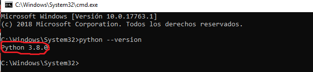
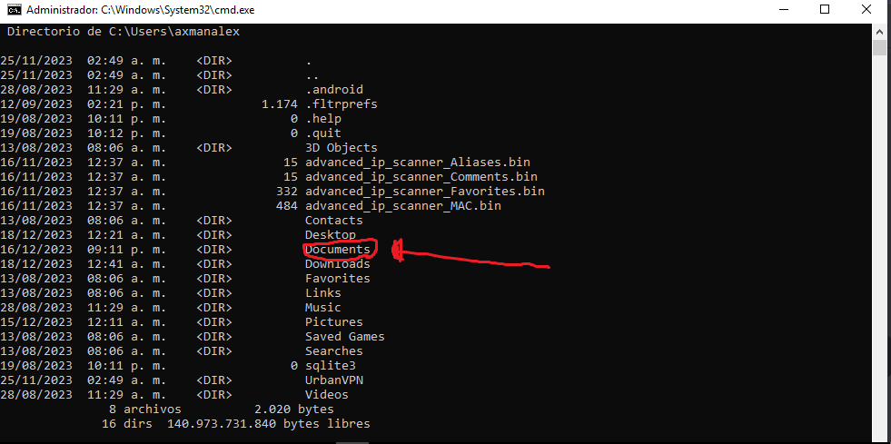
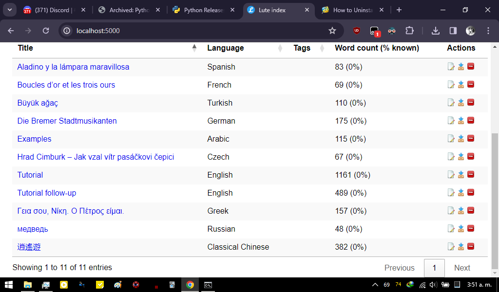

Windows 10 (32 bit) using Python
(Instructions courtesy of user axmanalex, so you'll see that username in these notes.)
A summary of what you're doing:
- Download and install Python 3.8.0, and put Python on your system
PATH - Create a directory in your Documents
- Install Lute into a virtual environment, and start it up.
Detailed instructions
-
Download Python version 3.8.0: https://www.python.org/downloads/windows/
-
Install Python with admin privileges, tick "Add python 3.8 to PATH" and click on install.

- When the install is done, open CMD with admin privileges and write "python --version" to check it works. You should see something like the below:

- Still in CMD, type
cd C:\Users, hit Enter, then typedirand hit Enter. Your screen should look like this:

This shows all users on your machine.
- Now you'll
cd(change directory) to your personal user directory. This user's name wasaxmanalex, so he wrote
cd axmanalex
and then hit Enter.
Use your own user name instead of axmanalex, and hit Enter. Then type dir and hit Enter. Your screen should look like this:

- You'll install Lute in one of your personal folders. axmanalex chose to install it in
Documents, so he wrote
cd Documents
and hit Enter.
Replace Documents with where you want to put Lute.
- Make a folder for Lute with the following commands (hit Enter after each line):
mkdir my_lute
cd my_lute
- Create and activate your "virtual environment" with the following commands (hit Enter after each line):
python -m venv myenv
.\myenv\Scripts\activate.bat
- Install Lute
pip install --upgrade lute3
and press Enter.
Lute will now start to download and install all the components. Errors will be printed as red text -- if you get any errors, google for solutions or ask for help in Discord.
- Start it up!
python -m lute.main
and press Enter. The screen should look something like this:

The server should be running.
Open any browser (Chrome, Firefox, etc), and go to http://localhost:5001/. It should look like this:

... and that's it, you're up and running!
Leave this command prompt window running while you're using Lute.
Stopping Lute
When you're done, if you want to stop the server, press Ctrl + C on your cmd and close it.
Restarting Lute
To run the server again, open CMD again with admin privileges, and at the prompt enter the following commands (hitting Enter after each line):
cd C:\Users\ ... path to your lute ...\
.\myenv\Scripts\activate.bat
Note that the route depends on where you installed your Lute. Here's what axamanalex writes:
cd C:\Users\axmanalex\Documents\my_lute
.\myenv\Scripts\activate.bat
Then start Lute again:
python -m lute.main
and press Enter. The server starts again.